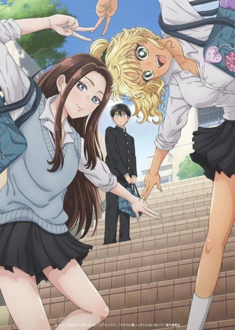

Manga continues fromCh. 86
Anime
Manga continues fromCh. 86
Anime Manga
MangaMy Dress-Up Darling
その着せ替え人形は恋をする
AniList8.0
Animeter—
2 seasons24 ep
MangaCh. 86
Arcs
Episodes numbered continuously across both seasons: Season 1 is 1-12 and Season 2 is 13-24.
Story arcFiller arc24 episodes
1
Season 1
Shizuku-tan
Wakana Gojo, a shy boy who makes hina doll costumes, agrees to sew a cosplay outfit for his popular classmate Marin Kitagawa.
Ep 1–5
2
Season 1
Black Lobelia
A cosplayer named Juju commissions Gojo, leading to a group cosplay with Juju's younger sister Shinju.
Ep 6–9
3
Season 1
Veronica and Liz
Marin wants to cosplay more daring characters, testing Gojo's limits.
Ep 10–11
4
Season 1
Summer Festival
Marin and Gojo spend a summer evening together at the festival.
Ep 12
5
Season 2
Halloween and Amane
Gojo tackles new techniques for a bunny-girl outfit and meets a crossplaying cosplayer.
Ep 13–15
6
Season 2
Culture Festival Pageant
Marin is entered into the school festival's crossdressing pageant, and Gojo must make a costume quickly.
Ep 16–18
7
Season 2
Akira and the Coffin Shoot
A new camera and a new acquaintance lead to a group shoot themed on the series Coffin.
Ep 19–24
Sources: Wikipedia
More like My Dress-Up Darling

Unclear7.5 Manga Ch. 717.2
Manga Ch. 717.2
 Manga Report 1097.8
Manga Report 1097.8
 Manga Ch. 626.7
Manga Ch. 626.7
 Unclear7.9
Unclear7.9
 Manga Vol. 87.3
Manga Vol. 87.3